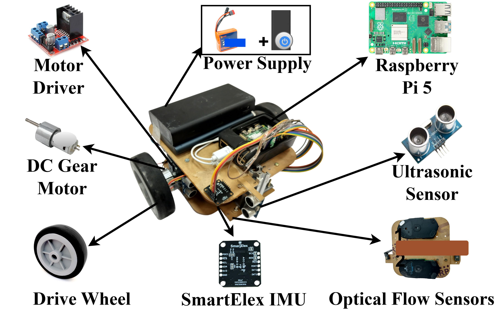

| Component | Specification | Qty | Function |
|---|---|---|---|
| Chassis | Acrylic plate | 1 | Compact mounting for all mechanical and electronic parts |
| Onboard computer | Raspberry Pi 5 | 1 | Sensor polling, data logging, actuation, 100 Hz fusion |
| Motor driver | L298N dual H-bridge | 1 | Receives PWM from Pi 5, drives the two motors |
| Drive motors | DC gear motors | 2 | Differential drive, forward motion, and steering |
| Power | 11.1 V Li-ion battery + switch | 1 | System power via integrated power switch |
| Optical flow | USB optical mouse sensors, 8000 DPI | 2 | Planar displacement (OFS1, OFS2) for dead reckoning |
| OFS mount | Shared acrylic plate (underside) | 1 | Near-constant ground contact, and baseline d = 99.51 mm |
| Gyroscope (IMU) | SmartElex ISM330DHCX | 1 | Continuous yaw rate is fused to reduce rotational drift |
| Range sensors (Ultrasonic) | HC-SR04 ultrasonic | 4 | Front, rear, and lateral ranging for wall following & mapping |
| Build phase | Activity |
|---|---|
| Mechanical | Assembled base plate, mounted DC gear motors in differential layout, fitted drive wheels and caster, attached OFS acrylic plate to underside. |
| Electrical | Wired Pi 5 to L298N (PWM + direction), connected motor outputs, battery, and power switch, and verified 5 V rail and motor actuation. |
| Sensors | Integrated OFS1/OFS2 (USB), ISM330DHCX (I²C), and HC-SR04 array (GPIO), and confirmed polling and 100 Hz logging. |
| Calibration | Measured OFS baseline (99.51 mm), computed per-axis scale factors, and estimated gyro bias under stationary conditions. |
If you use this build documentation, please cite: